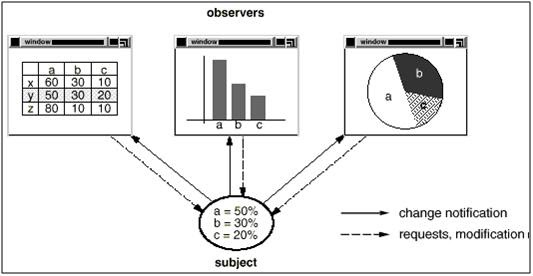
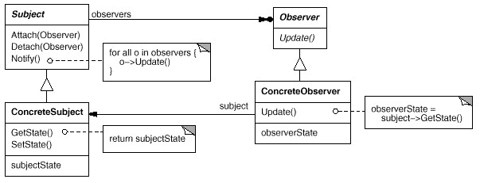

But : Besoin de maintenir une consistence entre des objets en relation.
Exemple
 La question est d'y arriver sans les coupler fortement.Le sujet (qui contient ici les données) doit pouvoir être utilisé indépendamment des représentations graphiques.
Et chaque représentation graphique doit pouvoir être utilisée indépendamment des données représentées ; elles ne doivent pas non plus dépendre les unes des autres.
Mais elles doivent se comporter comme si elles étaient liées.
Implémentation sans pattern
On peut répondre à cette problématique sans pattern Observer.
Voir l'implémentation "before" de ces implémentations de l'exemple gof.
Etudier et comprendre le code.
Bien comprendre les inconvénients de cette implémentation.
On voit que cette implémentation n'est pas tenable en situation réelle.
Etudier et comprendre le code.
Bien comprendre les inconvénients de cette implémentation.
Introduction du pattern
Le pattern observer répond à cette problématique en proposant deux concepts principaux : le sujet (ou observable) et l'observateur.Le sujet peut avoir un nombre quelconque d'observateurs qui dépendent de lui.
Tous les observateurs sont avertis lorsque le sujet change d'état.
En retour, chaque observateur demande au sujet de lui communiquer son nouvel état.
Structure
 A noter : le terme "Subject" est ambigü car peut signifier le contraire en philosophie ou en physique !On peut remplacer "Sujet" par "Observable".
Participants
Subject (= Observable)
- Connaît ses observateurs.
- Fournit une interface pour ajouter / supprimer des observateurs.
ConcreteSubject
- Stocke son état interne (dont une partie intéresse ses observateurs).
- Envoie une notification à ses observateurs lorsque son état change.
Observer
- Fournit une interface permettant de le mettre à jour, utilisée par les objets qui doivent lui notifier un changement d'état.
ConcreteObserver
- Stocke une référence vers un objet
ConcreteSubject. - Conserve la partie de l'état du
ConcreteSubjectqui l'intéresse (et qui doit rester synchronisée) avec leConcreteSubject). - Implémente l'interface permettant de le mettre à jour.
Voir l'implémentation "after" des implémentations de l'exemple gof.
Repérer les classes qui jouent le rôle de
Comprendre pourquoi la partie "1" de
Faire le diagramme de séquence dans la partie "2" de
Repérer les classes qui jouent le rôle de
Subject, Observer, ConcreteSubject, ConcreteObserver.
Comprendre pourquoi la partie "1" de
main() n'affiche rien. Comment pourrait-on remédier à ça ?
Faire le diagramme de séquence dans la partie "2" de
main()
Remarques
Observer est souvent implémenté avec une interface et Observable avec une classe abstraite qui fournit l'implémentation de la liste de ses observateurs et des méthodes notifyObservers(), addObserver() etc.
Dans ce pattern, la présence des interfaces (ou classes abstraites) est indispensable :
- L'observable maintient une liste d'observateurs ; il sait seulement que ces observateurs ont une méthode
update() et ignore tout de leur type concret.
- Les observateurs ont une certaine connaissance des observables concrets (appel à
getState() dans update()), mais le type abstrait Observable est nécessaire pour la signature de la méthode update, en particulier lorsqu'un observateur surveille plusieurs observables de types concrets différents (voir plus loin).
Communication observateur / observable
Lorsque l'observable est modifié, il exécute sa méthodenotifyObservers(), et cette méthode va appeler la méthode update() de chacun de ses observateurs.
Il faut donc un "protocole" de communication entre les deux.
Dans l'exemple gof, le protocole était simplement de dire que si quelque chose se passe chez un observable, il appelle la méthode
update() de ses observateurs.
On rencontre souvent un protocole un peu plus élaboré, où la méthode
update() passe en plus un argument :
public interface Observer{
public void update(Observable o, Object arg);
}
import java.util.List;
import java.util.ArrayList;
public abstract class Observable{
protected List<Observer> observers = new ArrayList<Observer>();
public void addObserver(Observer o){
observers.add(o);
}
public void notifyObservers(){
for(Observer o : observers){
o.update(this, getArgument());
}
}
public abstract Object getArgument();
}
Cette manière est très pratique, car elle peut permettre aux observateurs de réagir sans avoir besoin de rappeler l'observable (dans l'exemple gof, les observateurs avaient besoin d'appeler getState() pour réagir à l'appel de update()).
Plusieurs observables
Le pattern permet aux observateurs de rester synchronisés avec plusieurs observables, qui peuvent être de type concret différents, dès lors qu'ils dérivent (ou implémentent)Observable.
Exercice : Brebis
Exercice : Serre
Exemple : Swing
Voir la page sur Swing, paragraphe "Observer".Exemple : SSE
L'API SSE (Server Sent Event) illustre la logique de communication à l'oeuvre dans le pattern Observateur.On a :
- Une page web, analogue aux classes d'affichage dans l'exemple GOF (
Bar,Grid,Pie). - Du code côté serveur, équivalent à la classe
DataHolderde l'exemple GOF.
Côté serveur :
<?php
header('Content-Type: text/event-stream');
header('Cache-Control: no-cache');
$time = date('r');
echo "data: The server time is: {$time}\n\n";
flush();
Côté client :
<!DOCTYPE html>
<html lang="fr">
<head>
<meta charset="utf-8" />
<title>Test SSE</title>
<script>
var source = new EventSource("server_time.php");
source.onmessage = function(event) {
document.getElementById("result").innerHTML += event.data + "<br>";
};
</script>
</head>
<body>
<h1>Test SSE - Server Sent Event</h1>
<div id="result"></div>
</body>
</html>
Exercice
Analyser ce mécanisme :
- Comment faire la même chose en ajax classique.
- Différences et ressemblances avec le pattern Observateur.
En java (jusque java 8) -- obsolete
ATTENTION : ce mécanisme a été déprécié en java 9.This class and the
Observer interface have been deprecated. The event model supported by Observer and Observable is quite limited, the order of notifications delivered by Observable is unspecified, and state changes are not in one-for-one correspondence with notifications. For a richer event model, consider using the java.beans package. For reliable and ordered messaging among threads, consider using one of the concurrent data structures in the java.util.concurrent package. For reactive streams style programming, see the Flow API.
Fournit une classe java.util.Observable et une interface java.util.Observer
Observer
Une seule méthode :void update(Observable o, Object arg)
Observable
C'est une classe concrète que les sujets concrets doivent sous-classer.Implémente les mécanismes permettant de gérer ses observateurs et son état interne.
| java | gof |
|---|---|
| Gestion des observateurs | |
| void addObserver(Observer o) | attach(Observer) |
| int countObservers() | |
| void deleteObserver(Observer o) | detach(Observer) |
| void deleteObservers() | |
| Gestion de son état | |
| protected void clearChanged() | |
| boolean hasChanged() | |
| protected void setChanged() | |
| Notification des observateurs | |
| void notifyObservers() | notify() |
| void notifyObservers(Object arg) | |
Exercice : TP4 question 1 utilise aussi ces classes.